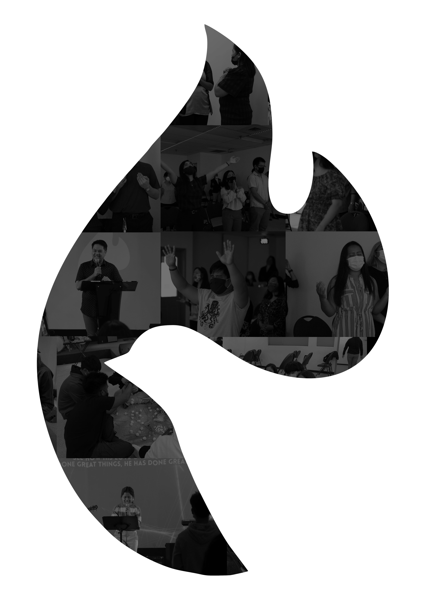
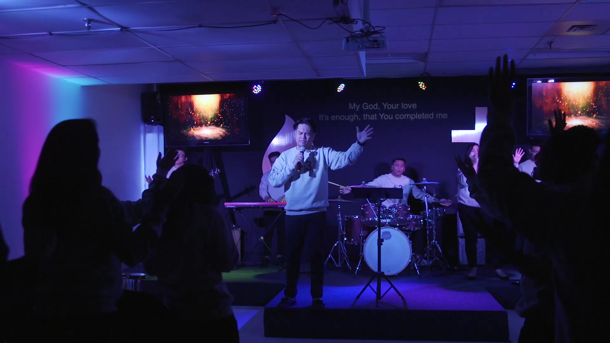

Sundays in our centres
All centres and directionsOur passion
“We must become like a mature person, growing until we become like Christ and have his perfection.”
Ephesians 4:13
Our passion is to win souls intentionally for Jesus, express the compassion of God and make disciples like Christ.
Our lead pastors, Elijohn and Czarina Payopay, started Christlikeness in 2017 in the city of Toronto, Ontario, Canada. Today, Christlikeness is ministering across the Greater Toronto Area, reaching out beyond through online streaming, social media platforms and the music of Christlike Worship and Radical Music.
“We must become like a mature person, growing until we become like Christ and have his perfection.”
Ephesians 4:13

The music of Christlike Worship and Radical Music
-
Christlike Worship
The manifest worship experience of the Psalmists Ministry of Christlikeness Church.
Listen on Spotify -
Radical Music
A collaborative project between Christlike Worship and the Psalmists of R.A.D.I.C.A.L, the youth ministry arm of Christlikeness Church.
Listen on Spotify